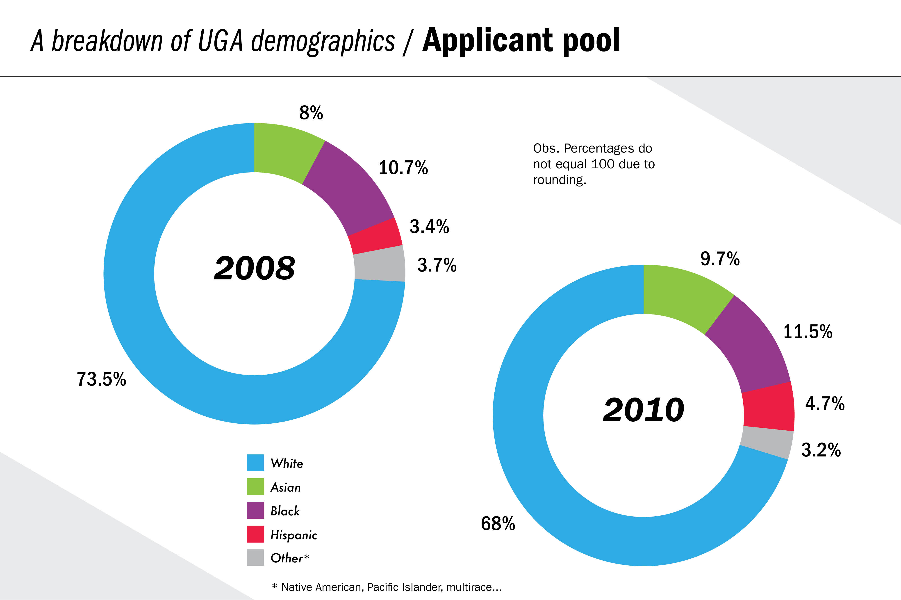
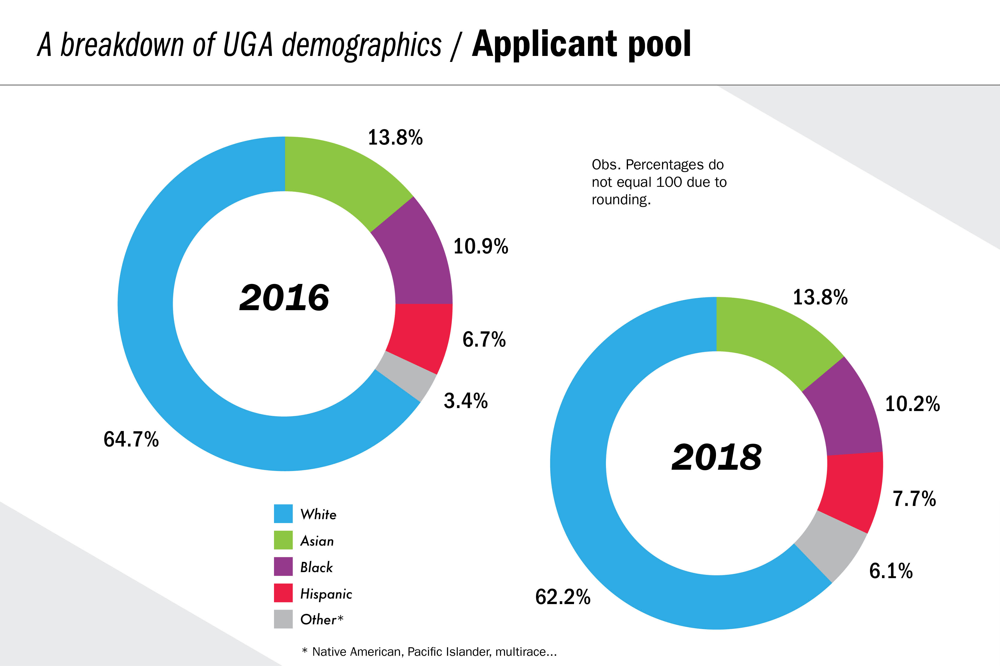
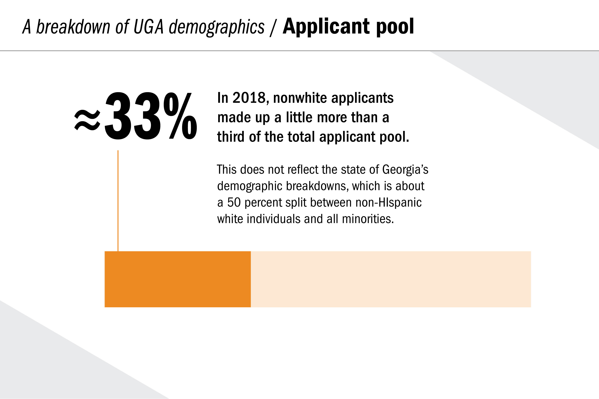
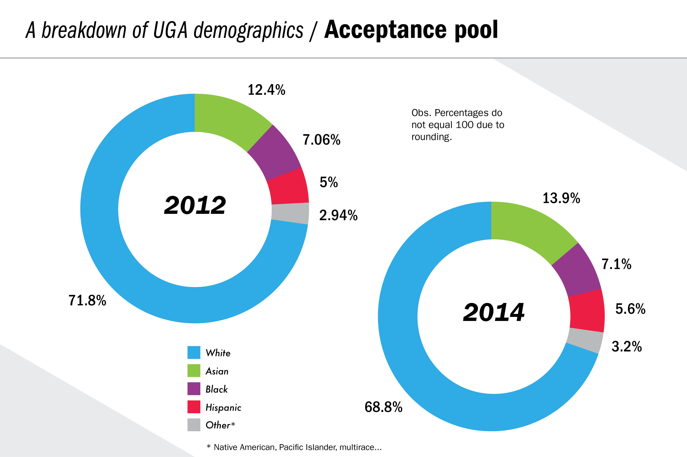
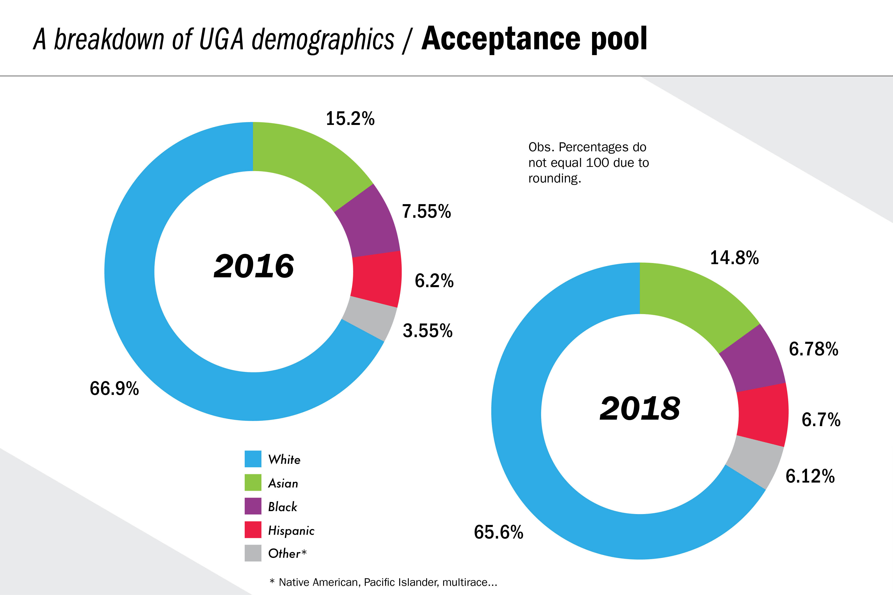
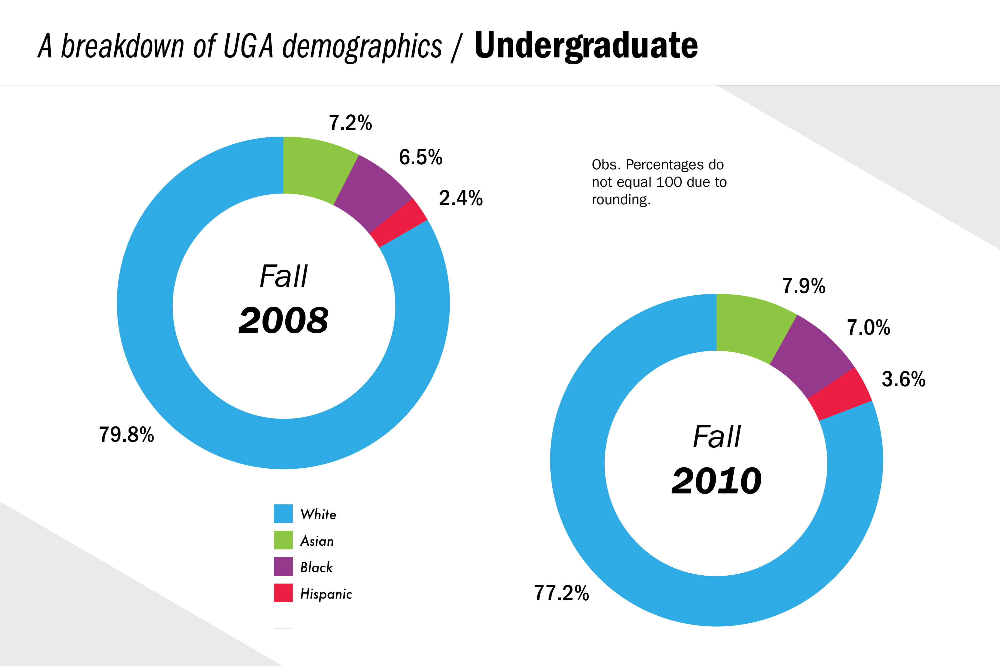
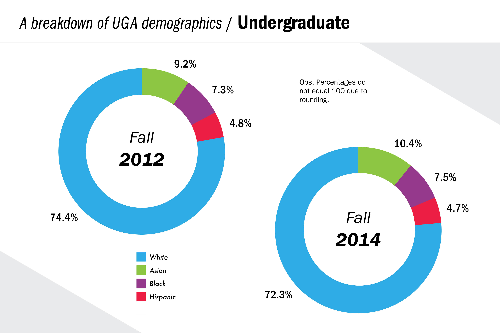
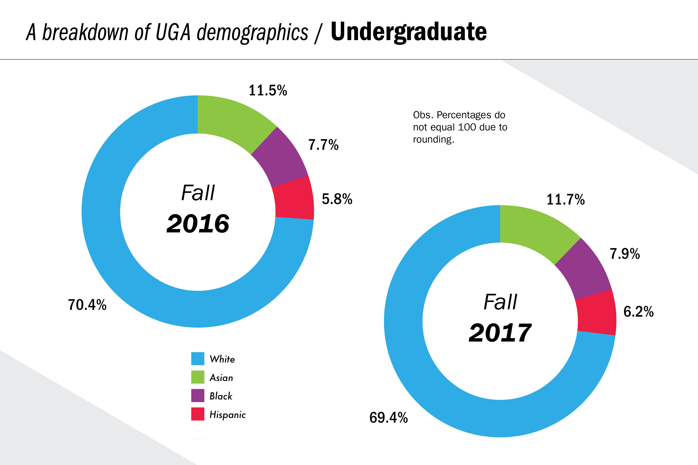
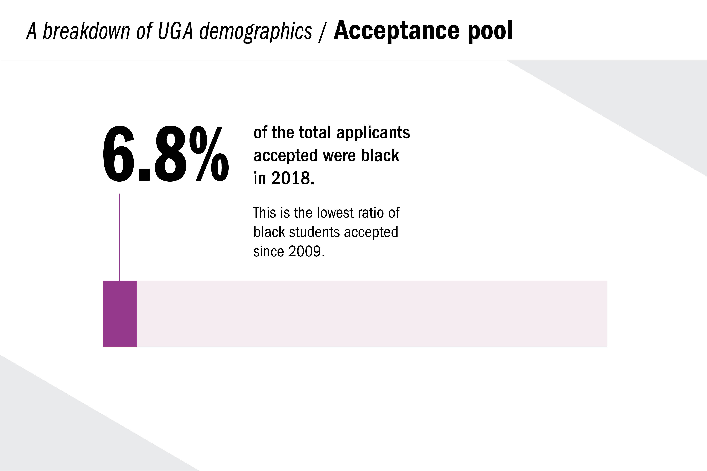

Long Live Short Film
Brand Development // Poster Design // Illustration
Project


Overview
In this project, I was asked to work with Red&Black reporters to create a data visualization system displaying the information they collected with a thorough investigation of the diversity demographics at the University of Georgia from 2008 to 2018. The goal was to create a system that could display a large amount of information in an simple and digestible way.

Through each period of time analyzed, the researchers were keen on separating the study into 3 categories; applicants, acceptance, and currently enrolled students. Comparing the racial demographics of each field from 2008 to 2018.





